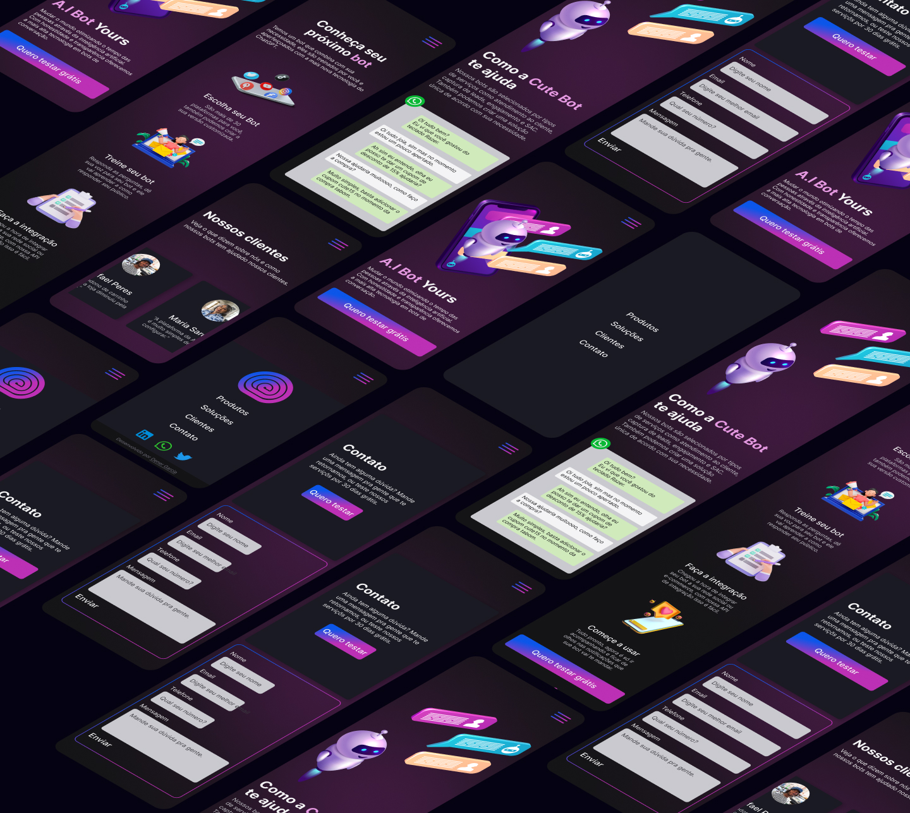
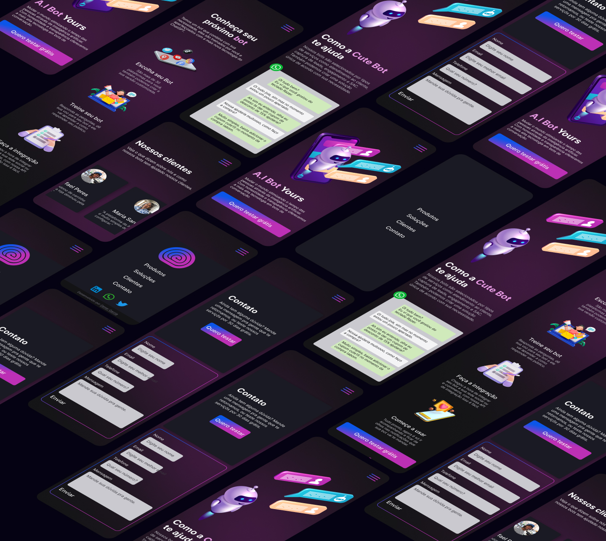
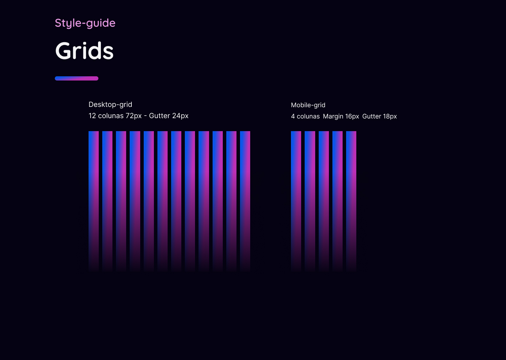
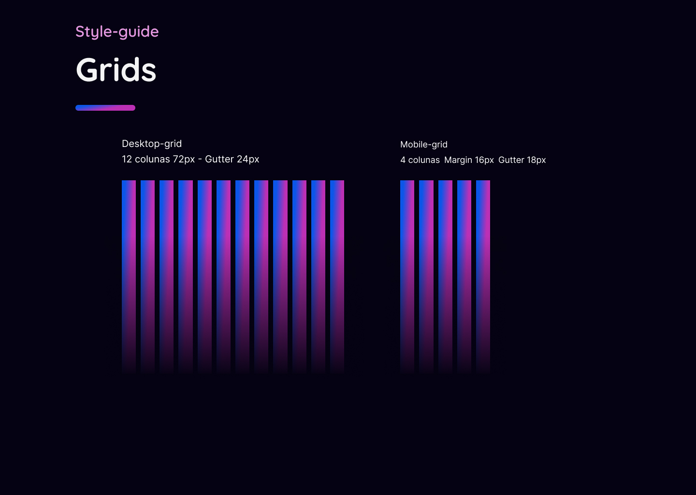

Promover uma inteligência artificial
Objetivo do projeto
Criar uma landing page moderna sobre uma empresa de inteligência artificial destacando sessões como apresentação da empresa, produtos oferecidos, como funciona o produto, depoimento de clientes e um formulário para contato.

Kick off
UX Process
Com base no moodboard e outras referências de design, busquei construir uma página simples com poucas sessões, mas que apresente o novo produto de uma empresa que trabalhar com IA do tipo interativa para chats.
Design
Ideação e prototipação
Chamativo no ponto certo! Nesse projeto pude trazer cores que remetem a tecnologia e inovação como o azul, rosa e roxo.
Utilizei um grid bastante comum de 8 pontos e trouxe na hierarquia das informações como imagens, títulos e botões para separar bem as sessões de cada parte da página.
 

Handoff
Ready for code
Como designer temos a responsábilidade de pensar em performance também, criar uma interface atraente mas que seja possível de "codar", no fim uma experiência boa de usuário esta ligado a vários outros fatores como resposta de carregamento e interações.

 


Desafios
Dificuldades durante o projeto
Apesar do tema de inteligência artificial estar em alta, buscar referências foi fundamental para o êxito do projeto, tivemos uma dead line curta para o projeto mas como já tinhamos bem definido o produto, pude me concentrar no apelo visual e técnico da página.